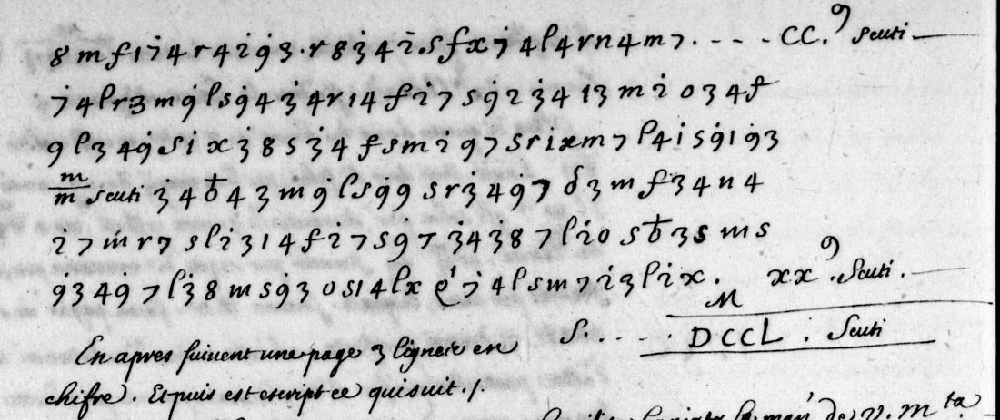

01 What survives
The copy's heading dates a letter to the king and its accompanying letter for the Grand Master to 15 March 1530. The sender is attributed to Giovan Gioacchino da Passano, the French agent in London; this is not a decrypted signature. The predominantly clear Italian body discusses English affairs and recovering payments and quittances from Wolsey. The cipher account precedes the royal letter's valediction.
There are sixteen physical cipher lines: an introduction, six short listed items, and a longer final financial passage. Seven amounts stand in the right margin. The earlier description of “nine entries” came from provisional transcription blocks and should not be mistaken for the manuscript's line count. The reference at the head appears to be “Vol. 79, fol. 78”; its modern shelfmark has not been established.

02 The Italian decipherment
Spacing, punctuation and u/v display are editorial. All key values are I (inferred); none is taken from a contemporary key or parallel plaintext. M marks uncertainty. The three labels below preserve unresolved signs: [D] probably refers to Wolsey, [S2] may be a royal title, and [Q] has no established expansion. These suggestions are not counted as decoded words.
Sapera vostra magesta che questo [S2] de gli beni del [D], per quanto si dice, son pervenuti circa [clear amount], in l'infrascrite par[u?]tite, cioe:
The opening expressly qualifies its report: “according to what people say.” The source has parutite; partite is likely intended, but the extra stroke is retained as a doubt. No missing preposition or royal title is silently supplied.
| Recovered entry | Established sense | Clear numeral component |
|---|---|---|
| In denari contanti | Ready cash | CL |
| In crediti de so [D] per [Q] interditi et poi levati | Credits; restriction and subsequent recovery, with agency unresolved | L |
| Per gli fruti de un anno de lo intrate de so [D] | One year's revenues; the reference to [D] remains abbreviated or uncertain | LX |
| In baghe circa | Probably jewels or rings, approximately | XX |
| In vasele d'oro et d'argento | Gold and silver vessels | CCL |
| In supelectili de casa per el meno | Household furnishings, at least | CC |
The final passage continues across the verso. Its emended letter reading is:
Per l'intrate del vescoato de Vinchiestri et abadia de sancto Albano, rebatuti [stacked clear notation, scuti] dese intrato al deto [D] insieme con lo arcivescoato de Diorch, asignati et ordinati, havera [Q] per ano circa [XX + abbreviation, scuti].
Winchester, St Albans and York are identifiable. Rebatuti means deducted; the signs do not support restituti, restored. The literal dese is an attested regional word for ten, but its connection with the stacked monetary notation and intrato is not secure. The passage concerns revenues, a deduction, and assigned annual income; a precise translation of who receives which sum would exceed the evidence.

The seven right-margin Roman components sum exactly: CL + L + LX + XX + CCL + CC + XX = DCCL (750). The apparent thousand multipliers suggest 750,000 scudi, compared with the introduction's approximate 800,000. This scale remains an interpretation of the notation. The inline stacked amount is not an eighth right-margin entry; its role is unsettled. The list mixes assets and revenues.
03 Why the second attempt worked
The earlier transcription merged significant dots and inconsistently classified numeral-like strokes. Several substitution searches therefore failed, although their synthetic controls worked. A fresh dotted inventory of 397 signs and 28 aliases gave connected Italian under a seeded many-to-one four-gram annealer. A frequency penalty was necessary: without it the model preferred repeated i. The shared model was it-cinquecento; no target plaintext was supplied.
The recurring distinctions include 3=i / 3d=d, 7=o / 7d=p, 8=i / 8d=q, 9=o / 9d=t, and S=a / Sd=g. The suffix d marks the dot; it is part of the same cipher sign. Linguistic extension and image checking established further values. Some apparent homophones may instead be the copyist's variants. Recognizing 1 m S m m 7 as un anno restored five previously excluded cipher signs.
The final 402-token inventory has IC 0.0602. It happens to equal the old transcription's token count but differs in segmentation and sign classes. The independent-looking place names, repeated words, ordinary Italian clauses and sum of the numeral components provide internal checks. They do not amount to an independent contemporary decipherment.
04 What remains open
- Three rare sign types:
Dfour times,Qtwice,S2once. No expansion is established. - The two so [D] expressions, the extra stroke in parutite, and the four-letter dese financial junction. These nine additional tokens are excluded from coherent coverage.
- Thirteen local contextual emendations, mostly misplaced or missing dots, are individually listed in the key and token audit. They are included in the 96.0% measure; the literal, uncorrected output is also supplied.
- A page and three lines of original cipher, expressly omitted by the historical copyist. No token count or decipherment is available. The extent figures apply to the surviving account only.
All sixteen extant lines and every residual occurrence were rechecked. The nearby cipher and the Ferrara Passano/Sormano material have different inventories. No matching key or complete parallel copy was found. The related printed Passano report, Letters and Papers IV no. 6307, is dated 4 April 1530 and cannot validate this March account. An original or independent complete copy is the next evidence needed; further confident expansion from this short text alone would be conjecture.
The exact audit is 395/402 assigned, 386/402 coherent, 16 M tokens, 13 emendations. These are reproducible counts of editorial judgments; the token accuracy is not independently known. The full reading and apparatus, the reconstructed key, and the token audit make each decision reviewable.
05 Sources and reproduction
BnF, Clairambault 331, f. 156; cipher on f. 157r and f. 157v. Prior listing: S. Tomokiyo, French ciphers in the age of Francis I (fresh access returned 503; the earlier local research and user-supplied status were retained). Related, not parallel: Letters and Papers IV no. 6307, from Le Grand III p. 412. Post-solution lexical check: OVI/CNR AGLIO, dese = dieci.
No prior decipherment was found in the material searched; this is not proof that none exists. The unsuccessful earlier attempt is retained in the repository. Run python joachim1530/decode.py for both readings and the coverage audit. The seeded search and shared-model preparation script are also included.
Evidence, code and notes: joachim1530/. The manuscript images remain credited to the Bibliothèque nationale de France / Gallica.